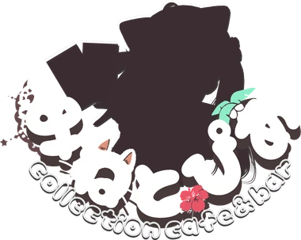

キャラ1枚と、異なるカードの戦術3枚を選びます。同じ効果の戦術も選べます。
HPは1000。引き分けは双方50ダメージ、10ターン目から100ダメージ。各戦術は1回使えます。体得で置き換えたカードは再び使えます。
SSRは5ターン目に変身し、全属性＋50。Mineの1stカードはターン終了ごとにランダム属性＋50、勝った属性はさらに＋50。
戦術カードを選んだ後、「この戦術を使う」で確定します。結果表示の後、次のターンへ自動で進みます。音量は右上で変更できます。
CPUはあなたの選択を見る前に行動を決めます。すべてのカードを使って練習できます。
このサイトの対戦結果は、VRChat内のMP・カード所持・戦績には反映されません。